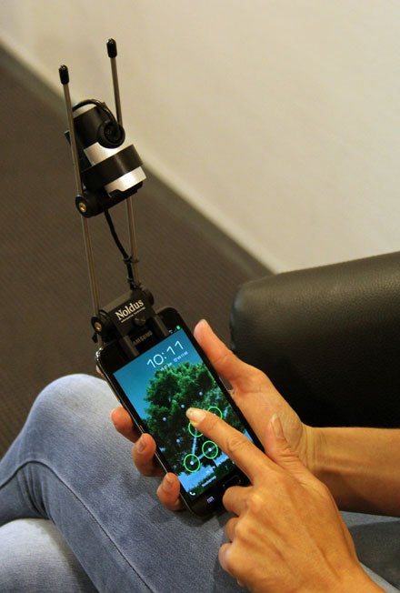

Bernard
User researcher at the UK Home Office
Belén
Up to yesterday,
Yocto Project
design lead
Usability testing
“A process that employs people as testing participants who are representative of the target audience to evaluate the degree to which a product meets specific usability criteria.”
Handbook of usability testing 2nd Ed., J. Rubin and D. ChisnellUsability testing
“A process that employs people as testing participants who are representative of the target audience to evaluate the degree to which a product meets specific usability criteria.”
Handbook of usability testing 2nd Ed., J. Rubin and D. Chisnell
Please, stand up
Take out your mobile phone
Sit down if you don't have a French mobile with a data plan
Sit down if you don't speak English
Sit down if you don't like beer
Sit down if you are absolutely terrified by the idea of being our test subject
Usability testing
“A process that employs people as testing participants who are representative of the target audience to evaluate the degree to which a product meets specific usability criteria.”
Handbook of usability testing 2nd Ed., J. Rubin and D. ChisnellWhy recording?
- Memory aid
- Powerful communication tool
- Which phone?
- Which context?
- Which connection?
- Which phone?
- Which context?
- Which connection?
Web task success rates
| Feature phones | 38% |
| Smartphones | 55% |
| Touch phones | 75% |
Web task success rates
| Feature phones | 38% |
| Smartphones | 55% |
| Touch phones | 75% |
Web task success rates
| Feature phones | 38% |
| Smartphones | 55% |
| Touch phones | 75% |
Web task success rates
| Feature phones | 38% |
| Smartphones | 55% |
| Touch phones | 75% |
Web task success rates
| Feature phones | 38% |
| Smartphones | 55% |
| Touch phones | 75% |
Web task success rates
| Feature phones | 38% |
| Smartphones | 55% |
| Touch phones | 75% |
Web task success rates
| Feature phones | 38% |
| Smartphones | 55% |
| Touch phones | 75% |
Handset usability affects test results
Remember
- Test with participants' own phones
- If not possible, include training and warm-up tasks
- Which phone?
- Which context?
- Which connection?
- Which phone?
- Which context?
- Which connection?
Field vs Lab
“The results show that the added value of conducting usability evaluations in the field is very little and that recreating central aspects of the use context in a laboratory setting enables the identification of the same usability problem list.”
Is it Worth the Hassle? Exploring the Added Value of Evaluating the Usability of Context-Aware Mobile Systems in the FieldJ. Kjeldskov, M. B. Skov, B. S. Als, R. T. Høegh, 2004Field 0 - Lab 1
“According to our study there was no difference in the number of problems that occurred in the two test settings. Our hypothesis that more problems would be found in the field was not supported.”
Usability Testing of Mobile Applications: A Comparison between Laboratory and Field TestingA. Kaikkonen, T. Kallio, A. Kekäläinen, A. Kankainen, M. Cankar - Journal of Usability Studies, 2005Field 0 - Lab 2
“Evaluations conducted in field settings can reveal problems not otherwise identified in laboratory evaluations.”
It’s Worth the Hassle! The Added Value of Evaluating the Usability of Mobile Systems in the FieldC.M. Nielsen, M. Overgaard, M.B. Pedersen, J. Stage, S. Stenild - NordiCHI 2006Field 1 - Lab 2
“The analysis of the comparison between usability testing done in two different settings revealed that there were many more types and occurrences of usability problems found in the field than in the laboratory. Those problems discovered tend to be critical issues.”
Usability Evaluation of Mobile Device: a Comparison of Laboratory and Field TestsH.B Duh, G. C. B. Tan, V. H. Chen, MobileHCI 2006Field 2 - Lab 2
“testing in the field requires double the time in comparison to the laboratory.”
Usability Testing of Mobile Applications: A Comparison between Laboratory and Field TestingA. Kaikkonen, T. Kallio, A. Kekäläinen, A. Kankainen, M. Cankar - Journal of Usability Studies, 2005“evaluations in the field (are) more complex and time-consuming”
It’s Worth the Hassle! The Added Value of Evaluating the Usability of Mobile Systems in the FieldC.M. Nielsen, M. Overgaard, M.B. Pedersen, J. Stage, S. Stenild - NordiCHI 2006“field-based usability studies are not easy to conduct. They are time-consuming”
Is it Worth the Hassle? Exploring the Added Value of Evaluating the Usability of Context-Aware Mobile Systems in the FieldJ. Kjeldskov, M. B. Skov, B. S. Als, R. T. Høegh, 2004Testing in the lab is better than no testing
“there is still no definite answer to the lab versus field question (...) the real question is not if - but when and how - to go into the field.”
Was it Worth the Hassle? Ten Years of Mobile HCI Research Discussions on Lab and Field EvaluationsJ. Kjeldskov and M.B. Skov, MobileHCI 2014Remember
- For most software, lab testing is fine
- If you must do field testing:
- Do it late
- Plan and run pilot tests
- Be prepared for the unexpected
- "Embrace the wilderness" (Kjeldskov & Skov 2014)
- Which phone?
- Which context?
- Which connection?
- Which phone?
- Which context?
- Which connection?
Do not assume flawless connectivity
Remember
- Do NOT test over WiFi
- Cover participants' data costs
Why recording?
- Memory aid
- Powerful communication tool
4 approaches to the small detail of how on earth are you going to record the whole thing
1. Wearable equipment
A Field Laboratory for Evaluating in Situ
R. T. Høegh, J. Kjeldskov, M. B. Skov, J. Stage, 2011
Great because ...
Allows testing in the field
But ...
- Difficult and time-consuming to set up
- Intrusive, uncomfortable and heavy
2. Screen capture
Mirroring
Recording
Recording
Great because ...
High quality screen footage
But ...
- Imposes device constraints
- You lose the finger context
“Screen recording software rarely provides finger footage (...) recording with an external camera is still the preferred method”
Usability Testing for Mobile is EasyR. Budiu, Nielsen Norman Group (2014)3. Document cameras

Usability Testing for Mobile is EasyR. Budiu, Nielsen Norman Group (2014)
Great because ...
Good recording quality with easy setup process
But ...
- Participants must keep within the camera range
But ...
- Participants must keep within the camera range
- Phone must lay on a desk or be hold at a flat angle
4. Mounted devices
Ready-made
 Noldus Mobile Device CameraDIY
Great because ...
It allows natural interaction with the mobile device
But ...
- Messy to build
- If bulky they can prevent single-handed use
- If heavy they can be tiring for participants
The ideal recording setup
- Easy to put together
- Cheap
- Repeatable
- Allows holding the device
- Allows one-handed use
- Supports all form factors
- Runs tests with participants' phones
- Captures screen, face and fingers
- Gives enough video quality
2 Meccano trunions
Two 5, 6 and 7-hole Meccano strips
One 11-hole Meccano strip
Six Meccano screws & nuts
One 13-20mm jubilee clip
One HUE HD webcam
A second USB webcam
A USB male to female extension cable
Some Blu Tack
An allen key
A Meccano wrench
A screwdriver
A computer (t'is Linux today)
Webcam app (GUVCView)
Screen recording software (recordMyDesktop)
A task
After her talk, Belén must rush to the airport to catch a flight. Using the Paris Airports website (www.parisaeroport.fr), can you tell her how much money will a taxi cost? She is going from the conference venue in 2 place Émile Cresp to Charles de Gaulle terminal 2C.
How was that?
73.00 EUR
125 grams
- An iPhone 7 weighs 138 grams
- A 9.7-inch iPad Pro weighs 437 grams
- I weigh 55,000 grams
- A blue whale weighs 136,400,000 grams
“We expect much of our buildings: they need to have firm foundations, solid structures, pleasing aesthetics. We should expect the same of emerging mobile systems”
Mobile Interaction DesignM. Jones and G. Marsden (2005)Credits
- Slide 42: Confused by iwishmynamewasmarsha
License: CC BY-NC 2.0 - Slide 85: Person looking at smartphone in the dark by Japanexperterna.se
License: CC BY-SA 2.0